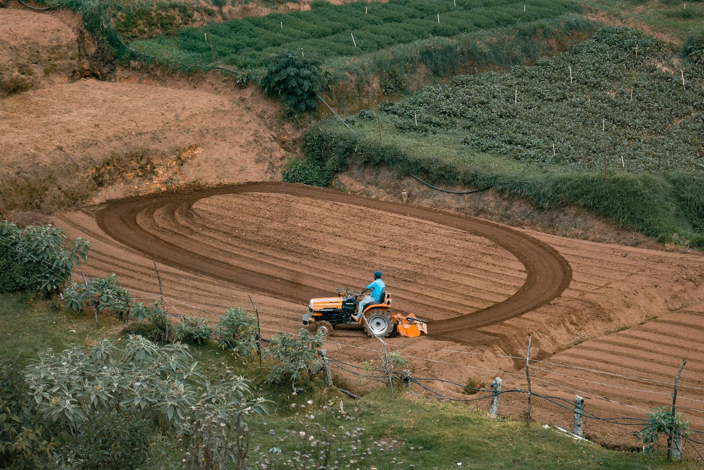
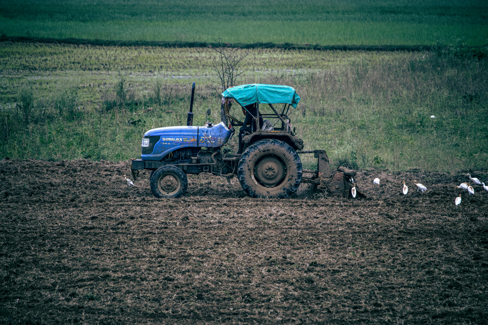
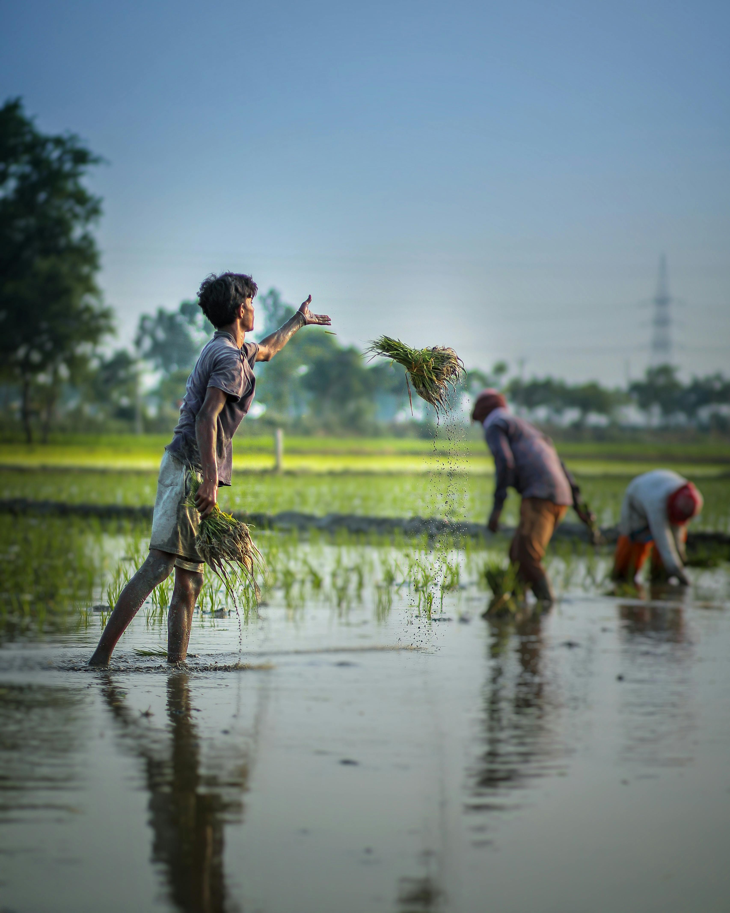

-
Organic Farming
Waste Management
-

Agri Business
Farming Business Ideas
-
Dairy Farming
Save Water Resources
-

Government Schemes
Farmer Support Schemes
-
Success Story
Farmer Growth Journey
-
Modern Equipment
Advanced Farming Machines
About Gramin Saathi
Modern Agriculture For Sustainable Future
We help farmers grow using smart agriculture techniques, organic farming methods, and eco-friendly solutions for better productivity.
More About us89000
Farmers Supported
45000
Organic Farms
120000
Crop Production
25000
Agri Business Partners